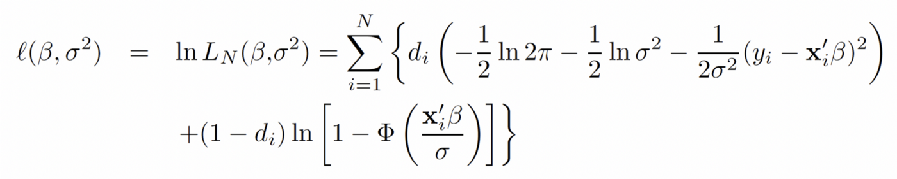
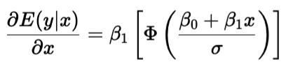
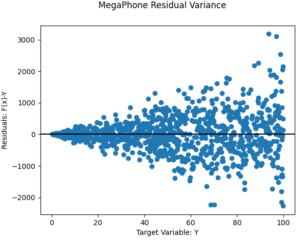
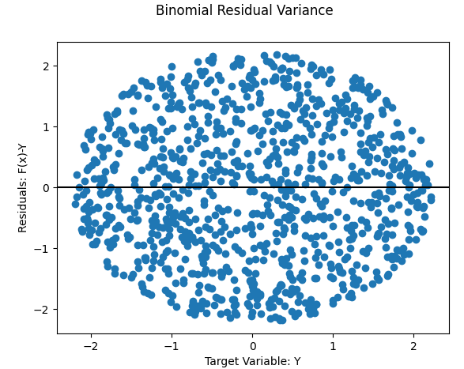
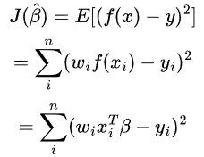
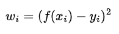

61 Other
61.1 Misc
- Harrell: It is not appropriate to compute a mean or run parametric regression on % change unless you first compute
log((%_change/100) + 1)to undo damage done by % change - Reaction time data can be modelled using several families of skewed distributions (Lindelv, 2019)
61.2 Other
Rates between 0 and 1
- Outcome without 0s and 1s
- Beta Regression
- Outcome with 0s and 1s
- Outcome without 0s and 1s
Outcome variable is greater than 0
- Gamma Regression - Can handle some dispersion with a log link
- Can model multiplicative dgp
- If zero-inflated, use Tweedie Regression
Bounded Outcome Variable
Tweedie Regression - Where the frequency of events follows a Poisson distrbution and the amount associated with each event follows an Exponential distribution
- e.g. Insurance claims, Operational loss (banking)
- Tweedie distribution is a Gamma distribution with a spike at zero.
Generalized Least Squares
- Packages
- {nlme::gls}
- Math - A Deep-Dive into Generalized Least Squares Estimation
- Also See Weighted Least Squares and Weighted Least Squares >> Feasible Generalized Least Squares
- Packages
61.3 Censored and Truncated Data
Censored Data - Arise if exact values are only reported in a restricted range. Data may fall outside this range but those data are reported at the range limits (i.e. at the minimum or maximum of the range)
- i.e. instances outside the range are recorded in the data but the true values of those instances are not.
- Tobit Regression - gaussian response, assumes constant (homoskedastic variance)
Log-Likelihood function
- d = 0 if yi = 0, and 1 otherwise
- 1st term (top line) is OLS likelihood
- 2nd term (bottom line) accounts for the probability that observation i is censored.
- d = 0 if yi = 0, and 1 otherwise
Marginal Effect
- is multiplied by the CDF () of the Normal distribution
- is weighted by the probability of y occurring at x
- Example: work_completed ~ hourly rate
- is weighted by the probability that an individual is willing to work at the present hourly rate, as represented by the CDF.
- is the standard deviation of the models residuals
- is multiplied by the CDF () of the Normal distribution
Example: Right-Censored at 800
VGAM::vglm(resp ~ pred1 + pred2, family = tobit(Upper = 800), data = dat)
- 2-Part Models (e.g. Hurdle Models) - A binary (e.g. Probit) regression model fits the exceedance probability of the lower limit and a truncated regression model fits the value given the lower limit is exceeded.
Truncated Data - Arise if exact values are only reported in a restricted range. If data outside this range are omitted completely, we call it truncated
- i.e. instances outside the range are NOT recorded. No evidence of these instances are in the data.
- Truncated Regression - Also assumes constant (homoskedastic variance)
- A poisson model will try to predict 0s even if 0s are impossible. Therefore, you need a zero-truncated model.
- The truncated normal model is different from a glm, because and are not orthogonal and have to be estimated simultaneously. Misspecification of one parameter will lead to inconsistent estimation of the other. Thats why for these models, not only is often specified as a function of regressors but also , often in the framework of GAMLSS (generalized additive models of location, scale, and shape).
- Expectation: \(E[y|x] = \mu + \sigma + \frac {\phi(\mu / \sigma)}{\Phi(\mu / \sigma)}\)
- Where () and () are the probability density and cumulative distribution function of the standard normal distribution, respectively. This intrinsically depends on both and .
- Expectation: \(E[y|x] = \mu + \sigma + \frac {\phi(\mu / \sigma)}{\Phi(\mu / \sigma)}\)
Heteroskadastic Variance - The variance of an underlying normal distribution does depend on covariates
- {crch}
Examples
- Insurance: There is a claim on a policy that has a payout limit of u and a deductible of d,
- Any loss amount that is greater than u will be reported to the insurance company as a loss of u - d because that is the amount the insurance company has to pay.
- Insurance loss data is left-truncated because the insurance company doesnt know if there are values below the deductible d because policyholders wont make a claim.
- truncated because the values (claims) are below d, so the instances arent recorded in the data.
- left because the values are below d and not above
- Insurance loss data is also right-censored if the loss is greater than u because u is the most the insurance company will pay. Thus, it only knows that your claim is greater than u, not the exact claim amount.
- censored because the values (claims) that are exactly u (policy limit) imply that claim is greater than u, so the instances are recorded but the true values are unknown.
- right because the values are above u and not below
- Measuring Wind Speed: The instrument needs a minimum wind speed, m, to start working.
- If wind speeds below this minimum are recorded as the minimum value, m, the data is censored.
- i.e. some other instrument detects a wind instance occurred and that instance is recorded as m even though the true speed of the wind of that instance is unknown.
- If wind speeds below this minimum are NOT recorded at all, the data is truncated.
- i.e. any wind instances (detected or not) are not recorded. No evidence in the data that these instances will have ever occurred.
- If wind speeds below this minimum are recorded as the minimum value, m, the data is censored.
- Insurance: There is a claim on a policy that has a payout limit of u and a deductible of d,
61.4 Fractional Regression
- Outcome with values between 0 and 1
- ** Use a fractional logit (aka quasi-binomial) only for big data situations **
- The fractional logit model is not a statistical distribution, leading it to produce biased results.
- See Kubinec article
- Recommends ordered beta regression, continuous bernoulli and provides examples
- In a big data situation, it respects the bounds of proporitional/fractional outcomes, and is significantly easier to fit than the other alternatives.
- Having a large dataset means that inefficiency or an incorrect form for the uncertainty of fractional logit estimates is unlikely to affect decision-making or inference.
- Beta: values lie between zero and one
- see {betareg}, {DirichletReg}, {mgcv}, {brms}
- {ordbetareg}
- Zero/One-Inflated Beta: larger percentage of the observations are at the boundaries (i.e. high amounts of 0s and 1s
- See {brms}, {VGAM}, {gamlss}
- Logistic, Quasi-Binomial, or GAM w/robust std.errors: outcome, y, is 0 y 1 (i.e. 0s and 1s included)
Example
library(lmtest) library(sandwich) # logistic w/robust std.errors model_glm = glm( prate ~ mrate + ltotemp + age + sole, data = d, family = binomial ) se_glm_robust <- coeftest(model_glm, vcov = vcovHC(model_glm, type="HC")) # quasi-binomial w/robust std.errors model_quasi = glm( prate ~ mrate + ltotemp + age + sole, data = d, family = quasibinomial ) se_glm_robust_quasi = coeftest(model_quasi, vcov = vcovHC(model_quasi, type="HC")) # Can also use a GAM to get the same results # Useful for more complicated model specifications model_gam_re = gam( prate ~ mrate + ltotemp + age + sole + s(id, bs = 're'), data = d, family = binomial, method = 'REML' )
61.5 Zero-Inflated and Zero-Truncated
- Continuous
- Some economists will use log(1 + Y) or arcsinh(Y) to model a skewed, continous Y with 0s. In this case, the treatment effects (ATE) cant be interpreted as percents. The effect sizes will depend on the scale of Y. (see Thread)
- Solutions
- Normalize Y by a pretreatment baseline
- = Y / Ypre
- where Ypre is the measured Y prior to treatment
- In regression, average treatment effect (ATE) would then be
.png)
- Where Y(1) is the value of Y for treated subjects
- Interpretation(e.g outcome = earnings): average treatment effect on earnings expressed as a percentage of pre-treatment earnings
- = Y / Ypre
- Normalizing Y by the expected outcome given observable covariates
- = Y / E[Y(0) | X]
- Y(0) are the observed outcome values for the control group
- The |X is kind of confusing but I dont think want the fitted values from a model where the outcome is the Y(0) values. I think theyd use a Y^ somewhere.
- So I think E[Y(0) | X] just the mean of the Y(0) values
- Interpretation of this transformed variable (e.g. outcome = earnings)
- an individuals earnings as a percentage of the average control groups earnings for people with the same observable characteristics X.
- Average Treatment Effect (ATE) Interpretation (e.g. outcome = earnings, X = pretreatment earnings, education)
- The average change in earnings as a percentage of the control groups earnings for people with the same education and previous earnings.
- = Y / E[Y(0) | X]
- Normalize Y by a pretreatment baseline
- ML 2-step Hurdle
- Steps
- Transform Target variable to 0/1 where 1 is any count that isnt a 0.
- Use a classifier to predict 0s (according to some probability threshold)
- Remember that models is predicting the probability of being a 1
- Filter rows that arent predicted to be 0, and predict counts using a regressor model
- round-up or round-down predictions based on which results in lower error?
- Steps
- Statistical
- Options: Poission, Neg.Binomial, Zero-Inf Poisson/Neg.Binomial, Poisson/Neg.Binomial Hurdle
- Zero-Inf Poisson/Neg.Binomial

- Uses a second underlying process that determines whether a count is zero or non-zero. Once a count is determined to be non-zero, the regular Poisson process takes over to determine its actual non-zero value based on the Poisson processs PMF.
- i is the predicted probability from a logistic regression that yi is a 0. This vector of values is then plugged into both probability mass functions.
61.6 Multi-modal
- Also see EDA >> Interactions >> Categorical Outcome
- {upsetr} - Might be useful to examine bimodal structure and determine cutpoints based on categorical predictor values and not just outcome values
- {gghdr} - Visualization of Highest Density Regions in ggplot2
- Test for more than one mode:
multimode::modetest(dat)- Performs Ameijeiras-Alonso excess mass test/dip statistic
- Ha: More than 1 mode
- Find location of modes:
multimode::locmodes(dat, mod0 = 2, display = TRUE)

- Anti-Mode location might be a good place for a cutpoint
- Ideas
- Quantile Regression
- Mixture Model
- Establish cutpoints and model each modal distribution separately
- ML
61.7 Weighted Least Squares (WLS)
- OLS with Weighted Pbservations
- Commonly used to overcome binomial or megaphone-shaped types of heteroskedacity of OLS residuals

 - Misc
- Also see
- Other >> Generalized Least Squares
- Real Estate >> Appraisal Methods >> CMA >> Market Price >> Case-Shiller Method for an example
- Resources
- R >> Documents >> Econometrics >> applied-econometrics-in-r-zeileis-kleiber >> pg 76
- Feasible Generalized Least Squares (FGLS) seems to have advantages over WLS Allows you to find the form of the skedastic function to use and estimate it from the data * See Zeileis applied econometrics book or another econometrics book for details
- Also see
- The residual error to be minimized becomes:
- Where wi is the weight assigned to observation i
- \(\hat \beta\) becomes

- Where W is a diagonal matrix containing the weights for each observation
- For megaphone-shaped and binomial types of heteroskedacity, its common to set the weights to equal to each observations squared residual error

61.8 Generalized Estimating Equations (GEE)
- Models that are used when individual observations are correlated within groups. Often used when repeated measures (panel data) for an individual are collected over time.
- You make a good guess on the within-subject covariance structure. The model averages over all subjects, and instead of assuming that data were generated from a certain distribution, it uses moment assumptions to iteratively choose the best to describe the relationship between covariates and response.
- A semiparametric method: while we impose some structure on the data generating process (linearity), we do not fully specify its distribution. Estimating is purely an exercise in optimization.
- Limitations
- Likelihood-based methods are not available for usual statistical inference. GEE is a quasi-likelihood method.
- Unclear on how to perform model selection, as GEE is just an estimating procedure. There is no goodness-of-fit measure readily available.
- No subject-specific estimates; if that is the goal of your study, use a different method. (see below)
- Other option is Generalized Linear Mixed Model (GLMM), but GLMMs require some parametric assumptions (See Econometrics, Mixed Effects)
- *Note that the interpretations of the resulting estimates are different for GLMM and GEE*
- Scenarios
- You are a doctor. You want to know how much a statin drug will lower your patients odds of getting a heart attack.
- GLMM answers this question
- You are a state health official. You want to know how the number of people who die of heart attacks would change if everyone in the at-risk population took the stain drug.
- GEE answers this question. GEE estimates population-averaged model parameters and their standard errors
- You are a doctor. You want to know how much a statin drug will lower your patients odds of getting a heart attack.
- Misc
- Notes from
- Packages
- The traditional GEE implementation has severe computation challenges and may not be possible when the cluster sizes (large numbers of individuals per cluster) get too large (e.g. >1000)
- Use One-Step Generalized Estimating Equations method (article with code)
- Operates under the assumption of exchangeable correlation (see below)
- Characteristics
- Matches the asymptotic efficiency of the fully iterated GEE;
- Uses a simpler formula to estimate the [intra-cluster correlation] ICC that avoids summing over all pairs;
- Completely avoids matrix multiplications and inversions for computational efficiency
- Use One-Step Generalized Estimating Equations method (article with code)
- Assumptions (similar to the assumptions for GLMs)
- The responses Y1, Y2, , Yn are correlated or clustered
- There is a linear relationship between the covariates and a transformation of the response, described by the link function, g.
- Within-cluster covariance has some structure (working covariance)
- Individuals in different clusters are uncorrelated
- Covariance Structure
- Need to pick one of these working covariance structures in order to fit the GEE
- Types
- Independence: observations over time are independent)
- Exchangeable (aka Compound Symmetry): all observations over time have the same correlation
- Correlation across individuals is constant within a cluster
- Intra-Cluster Correlation (ICC) is the measure of this correlation.
- AR(1): correlation decreases as a power of how many timepoints apart two observations are
- Reasable if measurements taken closer together (i.e. probably more highly correlated)
- Unstructured: correlation between all timepoints may be different)
- If the wrong covariance structure is chosen, will be estimated consistently, even if the working covariance structure is wrong. However, the standard errors computed from this will be wrong.
- To fix this, use Huber-White sandwich estimator (HC standard errors) for robustness. (See Econometrics, General >> Standard Errors)
- The idea behind the sandwich variance estimator is to use the empirical residuals to approximate the underlying covariance.
- Problematic if:
- The number of independent subjects is much smaller than the number of repeated measures
- The design is unbalanced the number of repeated measures differs across individuals
- To fix this, use Huber-White sandwich estimator (HC standard errors) for robustness. (See Econometrics, General >> Standard Errors)
- Example: geepack
Description: How does Vitamin E and copper level in the feeds affect the weights of pigs?
Data
library("geepack") data(dietox) dietox$Cu <- as.factor(dietox$Cu) dietox$Evit <- as.factor(dietox$Evit) head(dietox) ## Weight Feed Time Pig Evit Cu Litter ## 1 26.50000 NA 1 4601 1 1 1 ## 2 27.59999 5.200005 2 4601 1 1 1 ## 3 36.50000 17.600000 3 4601 1 1 1 ## 4 40.29999 28.500000 4 4601 1 1 1 ## 5 49.09998 45.200001 5 4601 1 1 1 ## 6 55.39999 56.900002 6 4601 1 1 1- Weight of slaughter pigs measured weekly for 12 weeks
- Starting weight (i.e. the weight at week (Time) 1 and Feed = NA)
- Cumulated Feed Intake (Feed)
- Evit is an indicator of Vitamin E treatment
- Cu is an indicator of Copper treatment
Model: Independence Working Covariance Structure
mf <- formula(Weight ~ Time + Evit + Cu) geeInd <- geeglm(mf, id=Pig, data=dietox, family=gaussian, corstr="ind") summary(geeInd) ## Coefficients: ## Estimate Std.err Wald Pr(>|W|) ## (Intercept) 15.07283 1.42190 112.371 <2e-16 *** ## Time 6.94829 0.07979 7582.549 <2e-16 *** ## Evit2 2.08126 1.84178 1.277 0.258 ## Evit3 -1.11327 1.84830 0.363 0.547 ## Cu2 -0.78865 1.53486 0.264 0.607 ## Cu3 1.77672 1.82134 0.952 0.329 ## --- ## Signif. codes: 0 '***' 0.001 '**' 0.01 '*' 0.05 '.' 0.1 ' ' 1 ## ## Estimated Scale Parameters: ## Estimate Std.err ## (Intercept) 48.28 9.309 ## ## Correlation: Structure = independenceNumber of clusters: 72 Maximum cluster size: 12- corstr=ind is the argument for the covariance structure - See article for examples of the other structures and how they affect estimates
ANOVA
anova(geeInd) ## Analysis of 'Wald statistic' Table ## Model: gaussian, link: identity ## Response: Weight ## Terms added sequentially (first to last) ## ## Df X2 P(>|Chi|) ## Time 1 7507 <2e-16 *** ## Evit 2 4 0.15 ## Cu 2 2 0.41 ## --- ## Signif. codes: 0 '***' 0.001 '**' 0.01 '*' 0.05 '.' 0.1 ' ' 1